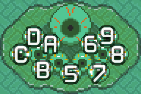

Download
Latest (SA-1)
This version should be used by any system that can properly emulate SA-1 with 256kb of BWRAM.
- SD2SNES
- SNES Classic
- SuperNT jailbreak
- Mesen-s
- higan/bsnes v115+
- bsnes+
- snes9x 1.6+
- faust
Randomizer (SA-1)
This version is slightly modified from the main version to include several randomizer features:
- Major items are replaced with green 20s
- No item text
- Bottle submenu is accessed with X, instead of automatically
- Pressing Y on a bottle in the menu will select the next bottle
- Quick swap
- Hammerable Ganon
v13.6
This is a snapshot of the pre-SA-1 practice hack. It will no longer be updated, as it only serves as a fallback for incompatible systems.
- Everdrive
- BizHawk's bsnes core (v85)
Latest update
FULL SA-1 REFACTOR
This is the biggest and most defining change of v14. From here on, the accessibility of the practice hack has been tightened a bit, now requiring decent SA-1 emulation. Fortunately, support is fairly widespread. Pretty much the only people left behind are Everdrive users, who will still be able to download v13.6.0 from this page; however, support for non-SA-1 versions will be discontinued.
The SA-1's on-board RAM allows every system to include large save files, so fully fledged savestates are now available to everyone, eliminating the need for a separate SDSNES version. And while we're at it, the vanilla HUD variants are being removed too.
- Y-Items:
- Unraveled the child and shoved it into its parent. The child being the bottle submenu.
- Equipment:
- Gameplay:
- Added NMG preset powder/shroom toggles
- Game state:
- Room loading
- Follower option
- Removed crystal switch color in lieu of the shortcut (it was causing problems).
- HUD extras:
- Vanilla hearts is now here for those who want it for whatever reason. I don't understand you guys, honestly. But, if you want it, this is where it is now.
- Added "Classic Gray" input display.
- Condensed the timers and ram watches into a single system.
- Replaced super watches with line counters and expanded functionality.
- Added some more ram watches:
- Room ID
- Quadrant
- Tile prop
- West somaria timer
- Ancilla index (no longer found in general ancilla watch)
- Hookslot (no longer found in general ancilla watch)
- Pit destination
- Boss HP (to replace enemy HP)
- The quick warp icon is now gray when you will not quick warp.
- Shortcuts:
- Toggle crystal switch state (only works when you're in control)
- Configuration:
- Added a Crayon Shin-chan font
- Added a choice for where the menu opens to.
- Menu colors can now be customized
- Other:
- Pressing select in the practice menu now brings you to the tippy top.
- Pressing Y in the practice menu now enables options and sets numfields to their max.
- The higher position for text boxes has been moved down 1 tile to make room for additional HUD features.
- Safeguards SA-1 for registers against heavy corruption from overlay corruption. Note that this will prevent the practice hack from crashing where the vanilla game would.
- Practice menu will restore BG3 properties under heavy VRAM corruption (unavoidable utility fix).
- I moved this section up here so it's easier to find. Anyone who asks about new features should contact their local ISP to ban them from this webpage. I'd do it myself, but this is all hosted by GitHub, so I have no real control there.
- Older updates are on a separate page now. If you're reading this, then you're probably in good shape with regards to that ISP banning thing.
- No one reads these. Why do I even bother?
- Bug fixes:
- Accidentally fixed the bug that prevented input display from updating during text.
- Added a room time trigger for post-Aga castle warp.
Hack features
The practice hack comes loaded with a full suite of HUD edits, features, and hooks to facilitate RTA practice and glitch hunting. The most common commonly used features include:
- Presets to load a specific section of the run with the appropriate equipment.
- Built-in save states for practicing any segment repeatedly.
- Timers for comparing strategies and execution against yourself and others.
- Input display for displaying your inputs on your display.
Menu controls
| R+Start |
Game play |
Open practice menu |
| Start |
In practice menu |
Close practice menu |
| Select |
In practice menu |
Return to main index |
| A |
Submenu option |
Open submenu |
| Toggle option |
Toggle item |
| List option |
Next selection |
| Command option |
Activate command |
| X |
Most options |
Clear/Disable |
| Numfields |
Set to minimum |
| Y |
Most options |
Enable |
| Numfields |
Set to maximum |
| B |
Main menu |
Move to top |
| Submenu |
Return to previous menu |
| L R |
Num field |
Increment/Decrement by larger amounts; no wrapping. |
| < > |
Toggle option |
Toggle item |
| List option |
Previous/Next selection |
| Num field |
Increment/Decrement by 1 |
| ^ v |
Practice menu |
Move cursor |
Menu legend
| Icon |
Meaning |
|
Opens a submenu |
|
Runs an immediate command |
|
Toggles an option between YES and NO |
|
Sets from a selection of choices |
|
Sets a numerical value |
|
Loads a preset |
|
Sets a shortcut binding |
Common concerns
How accurate is lag compared to the vanilla game?
As of version 14, very. Here's a quick rundown of how it works:
SA-1
The SA-1 is a coprocessor that can be used alongside the main SNES CPU. It can run code faster, but, more importantly, it can run at the same time as the SNES without slowing it down. This allows the practice hack to handle certain features with minimal lag change from vanilla. Due to the limitations on memory access, not every feature can be handled lag-free on the SA-1.
Features that run on the SA-1 will be marked with this badge: SA1.
Implementation
There are specific pieces of code that get run at the beginning and end of every frame to manage the OAM buffer. The clearing routine isn't coded very efficiently, so it's been optimized to be about twice as fast. The time saved is used to save a bunch of variables only visible to the main SNES CPU in space visible to both the SNES and the SA-1. The SNES CPU then sends an interrupt request which tells the SA-1 to process this information.
For the game HUD, almost every reference to its WRAM buffer has been changed to a place in BWRAM where the SA-1 can see it. Once the HUD's buffer has been modified by the game, it sends another interrupt request to the SA-1 to indicate that the coprocessor can do its own changes to the HUD before it's drawn to the screen. Some features (such as the hearts) are still written to their original WRAM buffer. This way, they can contribute their normal CPU load numbers without ruining the HUD.
On any frame where the HUD doesn't update, a separate routine makes sure that roughly the same number of cycles is contributed for SA-1 features on the SNES CPU's side. The rest of the code hacked in is very minimal, and the few extra cycles is unlikely to cause additional lag frames.
Do note that certain features simply cannot be enabled without requiring more SNES CPU time than normal. These features will only take CPU time when the HUD is redrawn. Such features will be marked with this badge: LAG.
Known issues
- The lit rooms toggle may hide BG1 when switched indoors.
- Lag from mosaics can be very inaccurate.
- Thieves' Town Hellway and the Agahnim fights may cause issues with transparency and palettes.
Trouble shooting
- Holding Start and Select during power on will reset all configurations to their default.
- If something in the menu goes out of range, you will be warned with "BAD VAL". Press X to clear it.
- If you accidentally begin setting a shortcut you don't want, hold any combination of buttons to set the shortcut then press X to delete.
Features list
Main menu
- Presets
- Built in savestates for various categories
- Items
- Modify Y-item loadout
- Equipment
- Modify A-items, combat items, health, and keys
- Game state
- Modify game progress, status, and mode
- Link state
- Modify player character attributes
- Gameplay
- Feature toggles related to gameplay
- RNG control
- Fix specific RNG calls to specific values
- HUD extras
- Toggle features that appear on the HUD
- Shortcuts
- Modify shortcuts for quick feature access
- Configuration
- Configuration toggles related to meta-operation
- Bow
-
- None
- Normal
- Silver
- Boom
-
- None
- Blue
- Red
- Hookshot
- On/Off
- Bombs
-
- 0
- 5
- 10
- 15
- 20
- 25
- 30
- Powder
-
- None
- Mushroom
- Powder
- Fire rod
- On/Off
- Ice rod
- On/Off
- Bombos
- On/Off
- Ether
- On/Off
- Quake
- On/Off
- Lantern
- On/Off
- Hammer
- On/Off
- Flute
-
- None
- Shovel
- Inactive flute
- Active flute
- Net
- On/Off
- Book
- On/Off
- Bottles
-
For each bottle (1–4):
- None
- Unobtainable shroooom
- Empty
- Red potion
- Green potion
- Blue potion
- Fairy
- Bee
- Good bee
- Somaria
- On/Off
- Byrna
- On/Off
- Cape
- On/Off
- Mirror
- On/Off
- Fill magic
- Tops off the magic meter
- Fill HP
- Fully replenishes health
- Fill rupees
- Grants 999 rupees
- Sword
-
- None
- Fighter's sword
- Master sword
- Tempered sword
- Butter sword
- Shield
-
- None
- Fighter's shield
- Red shield
- Mirror shield
- Armor
-
- Green jerkin
- Blue mail
- Red mail
- Gloves
-
- None
- Power glove
- Titan's mitts
- Boots
- On/Off
- Flippers
- On/Off
- Moon pearl
- On/Off
- Half magic
- On/Off
- Max HP
- 3–20
- Bombs
- 0–30
- Arrows
- 0–50
- Keys
- 0–9
- Big keys
- Toggle big keys for each dungeon.
- Skip text
- Skips the current text box
- Remove sprites
- Removes all sprites, overlords, and ancillae from the screen.
- Reset current room
- Resets the following data of the current room:
- Quadrants visited
- Keys collected
- Chests opened
- Doors opened
- Moving walls
- Water level
- Boss defeated
- Heart collected
- Rupee tiles collected
NOTE: This only affects the data pertaining to that specific room, but not data pertaining to the dungeon as a whole. For example, even though key collection is reset, the key count for that dungeon is left unaltered.
- Load room
- Loads selected EG1 room ID.
- Reset dungeons
- Resets every room associated with a specific dungeon (including all non-dungeon rooms as a single group) with the same caveats and restrictions as Reset current room.
- Toggle bosses defeated
- Modifies the boss defeated room flag for the specific boss's room.
- Pendants and crystals
- Toggle collection status of each dungeon prize.
- Game flags
- Toggles miscellaneous SRAM flags:
- Uncle dead
- Talking to uncle in the secret passage
- Sanc priest
- Talking to the priest after mastersword
- Escaped
- Returning Zelda to sanctuary
- Uncle left
- Uncle leaving the house
- Aginah
- Aginah discussing book
- Fortune cycle
- Fortune teller hint selector
- Follower
-
- Follower
- Lonely Link
- Zelda
- Garbage
- Trash
- Old man
- Zelda Text
- Blind
- Frog
- Dwarf
- Sign man
- Kiki
- ??????
- Purple chest
- Super bomb
- Sasha text
- World
- Switch between Light World and Dark World. Does not change screen ID.
- Progress
- Game mode selector:
- Started
- No progress. Game will not save. Always respawned in bed.
- Uncle
- Sword and shield obtained from uncle. Spawn is somewhere in escape (or Sanctuary with old man rescue).
- Zelda
- Zelda has been rescued. Spawn is standard selection, or mountain with old man follower.
- Agahnim
- Agahnim has been defeated. Spawn is standard selection in Light World, Pyramid in Dark World, or mountain with old man follower. Fake Light World from dungeon death no longer possible.
- Map indicator
- World map marker:
- Castle
- Zelda rescue mission
- Kakariko
- Go speak to villagers to learn about the Elders
- Sahasrahla
- Go speak to Sahasrahla to learn about the Master Sword
- Pendants
- Light World dungeons
- MS
- Go collect the master sword
- ATower
- Go fight Agahnim
- Darkness
- First Dark World dungeon
- Crystals
- Remaining Dark World dungeons
- GTower
- Go fight Ganon
- Waterwalk
- Control the falling-in-pit address
- Unarmed
- 0; Link's default state
- Armed
- 1; armed as if waterwalk were set up by dashing from a pit
- Armed (2)
- 2; difficult (if not impossible) to obtain intermediate state
- Deathholed
- 3; falling state obtained after a death hole in the underworld
- Activate superbunny
- Sets Link's general state handler to default (
$00). For safety, this will only run when Link's handler is currently set to bunny ($17). If successful, you should hear a poof; otherwise, you will hear a beep.
- Activate lonk
-
Sets Link's general state handler to bunny ($17). For safety, this will only run when Link's handler is at its default value ($00). If successful, you should hear OOF; otherwise, you will hear a beep.
Despite the labels, the Superbunny and Lonk menu options can be used to return to normal Link and normal bunny, respectively.
- Finish mirrordoor
- Sets the mirror door wait timer to finish after 11 frames. For safety reasons, this will only run when the Triforce door submodule is in effect. If successful, you should hear a VOOMP; otherwise, you will hear a beep.
- Statue drag
- Toggles the fake statue address.
- Anc Index
- Set ancilla search index ($03C4); 0–255
- Armed EG
- Toggle status of armed EG.
- Eg strength
-
- Skip Triforce
- Transitioning north from Ganon's Room will behave like a normal screen transition, allowing consistent and reliable room times for the fight.
- Sanc heart
- Presets will have more health, as if the Sanctuary heart were collected earlier in the run.
- Powder (for NMG)
-
- No
- Mushroom
- Powder
- Disable beams
- The Master Sword and its upgrades will no longer fire sword beams at full health.
- Lit rooms
- Dark rooms will be at full brightness and visibility. This option will remove the darkness in the current room as well.
- Fast walls
- Speeds up the moving wall cutscenes.
- Visible probesLAG
- Search probes used by guards, beamos, etc. will display a graphic.
- See bonk itemsLAG
- Shows bonk items on the overworld as stationary sprites.
- Disable BG1
- Disables SNES background 1 via PPU registers. Has no effect on lag.
- Disable BG2
- Disables SNES background 2 via PPU registers. Has no effect on lag.
- OoB Mode
- Turns on the debug OoB mode, which has the following features:
- Link ignores all collision, and can walk everywhere.
- The mirror works to go from Light World to Dark World.
- Prize packs
- Modifies drop percentages. This option only affects prize packs, not other guaranteed drops such as the stun drop or keys. It will, however, affect the 100% prize packs.
- Vanilla
- Drops behave normally. 50% for most prize packs, and fairy luck works.
- Always
- All enemies drop their prize packs when possible.
- Never
- No enemy drops prize packs, ever.
NOTE: toggling this option will reset existing fairy luck.
- Frame rule
- Forces the frame counter to a specific value on preset or savestate load.
- Pokeys
- Random, fixed RNG for every combination of UD/LR for each pokey
- Agahnim
-
- Random
- Yellow
- Blue
- Helmasaur
-
- Random
- No fireball
- Fireball
- Ganon warps
-
- Random
- No warp
- Warp
- Ganon warp location
-
- Random
- Far left
- Bottom left
- Bottom right
- Far right
- Eyegore walk
-
- Random
- Short
- Medium
- Long
- Arrghus walk
-
- Random
- Shortest
- Short
- Medium
- Long
- Longest
- Turtles walk
- Random, 32 fixed RNGs
- Lanmola exit
- Random, fixed {X,Y} for 0≤X≤7; 0≤Y≤7
- Conveyor belt
-
- Random
- Right
- Left
- Up
- Down
- First Vitty
-
- Random
- Slot 5
- Slot 6
- Slot 7
- Slot 8
- Slot 9
- Slot A
- Slot B
- Slot C
- Slot D

- Health displaySA1
- How to show Link's current and max health:
- Numerical
- Classic practice hack display under rupee counter
- Vanilla
- Vanilla graphical display NOTICE: vanilla hearts will be drawn to the HUD first, and additional HUD features may be drawn over them.
- Input displaySA1
- Visual indication of every button registered each frame.
- Off
- Disabled.
- Graphical
- Rectangle buttons arranged like a controller.
- Classic
- Original character display.
- Classic Gray
- Classic with unpressed buttons in gray.
- Counter 1SA1
- Counter 2SA1
- Counter 3SA1
- Counter 4SA1
- Counter 5SA1
- 5 counter slots displayed on the HUD.
- Room time
- Time spent on the current screen, starting from the beginning of the last transition.
- Lag counter
- Count of lag frames on the current screen, starting from the beginning of the last transition.
- Idle frames
- Count of frames with no relevant input, starting from the beginning of the last transition.
- Segment time
- Time spent since the beginning of the last segment timer reset.
- Coordinates
- Absolute position of Link (X,Y)
- Subpixels
- Current subpixel remainder (Hexadecimal). Includes door marker for icebreaker, etc.; address: $7E002A
- Room ID
- Current room ID, corrected room ID (based on coordinates), and sync; address: $7E00A0
- Quadrant
- Current quadrant, corrected quadrant (based on coordinates), and sync; address: $7E00A9
- Spooky
- Ancilla height for slot 4; address: $7E02A2
- Arc variable
- Overlord value used by Armos Knights and Ganon for circles; address: $7E0B08
- WEST SOMARIA
- West somaria door timer; address: $7E0690
- Anc index
- Ancilla overload starting index; address: $7E03C4
- Pits
- Current pit destination/damage flag; address: $7EC000
- Hookslot
- Hookshot slot index; address: $7E039D
- Boss HP
- Health of enemy in slot 0; address: $7E0E50
- Line counter 1LAG
- Line counter 2LAG
- Line counter 3LAG
- 3 larger lines of info displayed on the HUD.
- Room flags
- Boss heart, key, chest, and door floogs for current room.
- Camera X
- Camera scroll and boundaries for X-axis.
- Camera Y
- Camera scroll and boundaries for Y-axis.
- Ancilla 0-4
- Custom ancilla property for slots 0–4 (property # corresponds to counter #)
- Ancilla 5-9
- Custom ancilla property for slots 5–9
- Ancilla IXd
- Custom ancilla property for the 5 slots preceding the current search index ($03C4)
- Ancilla Prop 1
-
- Ancilla Prop 2
-
- Ancilla Prop 3
-
- Custom property # for ancillae corresponding to counter #
- ID
- Ancilla ID from $03C4,X (includes coloring for 00 and replacable particles).
- Y coord
- Ancilla Y-Coordinate; address: $7E0BFA,X
- X coord
- Ancilla X-Coordinate; address: $7E0C04,X
- Altotude
- Ancilla Z-Coordinate; address: $7E029E,X
- Layer
- Ancilla layer; address: $7E0C7C,X
- Extension
- Used both for hookshot length and item receipt ID, among other less interesting properties; address: $7E0C5E,X
- Tile prop
- Tile interaction; address: $7E03E4,X
- EG check
- Something; address: $7E03A4,X
- Direction
- Generally used for direction of ancilla; address: $7E0C72,x
- Delta Y
- Delta X
- Difference between Link's coordinates and the ancillae's.
- Heart lagSA1
- Animated spinning square that indicates there is heart lag present.
- QW indicatorSA1
- Displays an icon on the HUD when the current camera will effect a quickwarp.
- Lanmola cycsSA1
- Displays a counter for the cycle count of the three Lanmolas individually.
- LTTPHack menu
- R+Start - Opens the practice hack menu. NOTE: this shortcut cannot be changed.
- Load last preset
- Loads the last preset used from the preset menu.
- Save state
- Saves current state of the game, similar to emulator savestates.
- Load state
- Loads custom savestate/preset, similar to emulator savestates.
- Reset seg timer
- Resets the segment timer, which is not automatically reset like room timer.
- Toggle OoB
- Turns on out-of-bounds mode.
- Skip text
- Skips the current text box.
- Toggle switch
- Flips the crystal switch color in underworld.
- Remove sprites
- Removes all sprites, overlords, and ancillae from the screen.
- Fill everything
- Maxes out equipment, rupees, items, and health.
- VRAM repair
- Attempts to fix important graphics registers and VRAM data that have been corrupted by door glitches.WARNING: If this shortcut is triggered during a text box, the text box will disappear, but the game will remain in text mode.WARNING: this feature only repairs registers and VRAM; other areas of RAM may result in game crashes unrelated to this feature, but which are never normally encountered in vanilla.
- Show somaria pits
- Modifies the upper layer tilemap to mark pits.NOTE: this feature is intended for finding pits created by overlay corruption, but it will mark all standard pit tiles the same way.
- Rerandomize
- When using built-in savestates and presets, this will run the RNG function to create a new value on each load.
- Music
- Sets the ADSR envelope of every instrument used by music to 0 (except the saw used by mirror warps). The size of the SPC transfers remains the same, so this feature does not affect lag.
- Death reload
- Reloads the last preset upon death.
- Preset cat
- Changes the selection of presets.
- Menu open
- Select whether the practice menu opens up to where you left off or resets to the top.
- HUD font
- Change the font used by HUD extras. This will not change the font for the vanilla HUD or for the HP display. Hover over options for larger preview.
- Classic
- Normal
- Italic
- Mario World
- DKC (Donkey Kong Country)
- ZAMN (Zombies Ate My Neighbors)
- SMT (Shin Megami Tensei)
- Earthbound
- FF6 (Final Fantasy VI)
- Lufia 2
- Goonies 2
- Emerald (Pokémon Emerald)
- Klonoa
- TI-83
- Shin-chan
- Pac-Man (Pac-Man Arrangement)
- DOOM (GBA version)
- Undertale
- Planet X-3
- Skyroads
- Yoshi's (Island)
- S. Metroid (Super Metroid)
- Tazmani
- Color config
- Personalization of the practice menu colors. The following preset colors are available:
000000
BlackF8F8F8
WhiteC06000
BrownA8A8A8
GrayC00000
RedE0A800
Yellow20C028
Green4870D0
BlueC8C8F8
Periwinkle000090
Dark Blue06A969
Lui green20A8F8
Glan blue fantasyF8B000
Mike orange782878
Purple605800
Garbage8090A0
BlilverF858A8
PinkF76D61
Peach422AA8D9
Siriusly?BADA55
Almost BADA55
Shoutouts
- MathOnNapkins - ALttP US disassembly
- Acmlm - save/load technique on SD2SNES.
- Pinkus - original practice hack
- Lui - poverty savestates and new presets
- Myramong - original music muting
- tewtal - JavaScript patcher